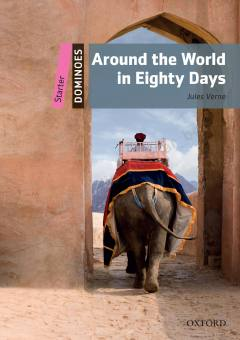

ATFilias Foggning dunyo bo'ylab qiziqarli va tezkor sayohati haqidagi moslashtirilgan inglizcha hikoya.
Jules Vernening mashhur sarguzasht romani ingliz tilini o'rganuvchilar uchun maxsus moslashtirilgan. Kitobda Filias Foggning dunyo bo'ylab 80 kun ichida sayohat qilish haqidagi qiziqarli voqealari sodda tilda bayon etilgan.